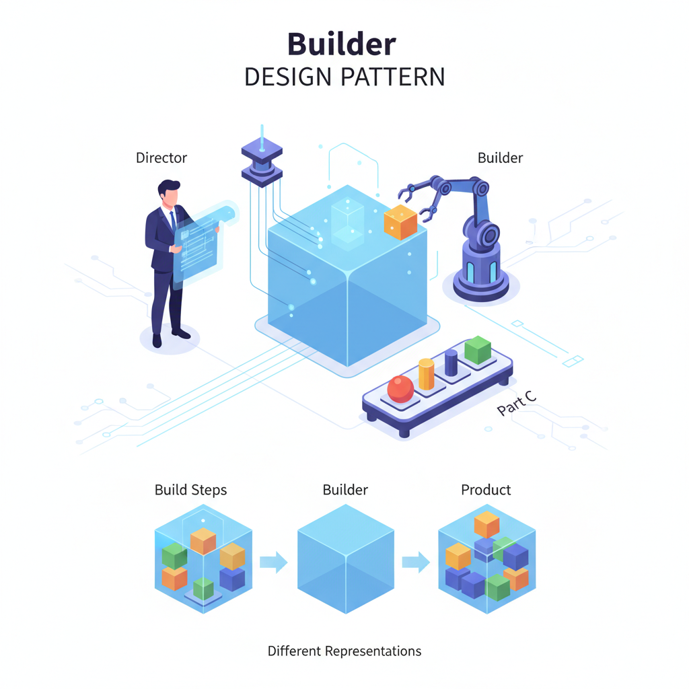
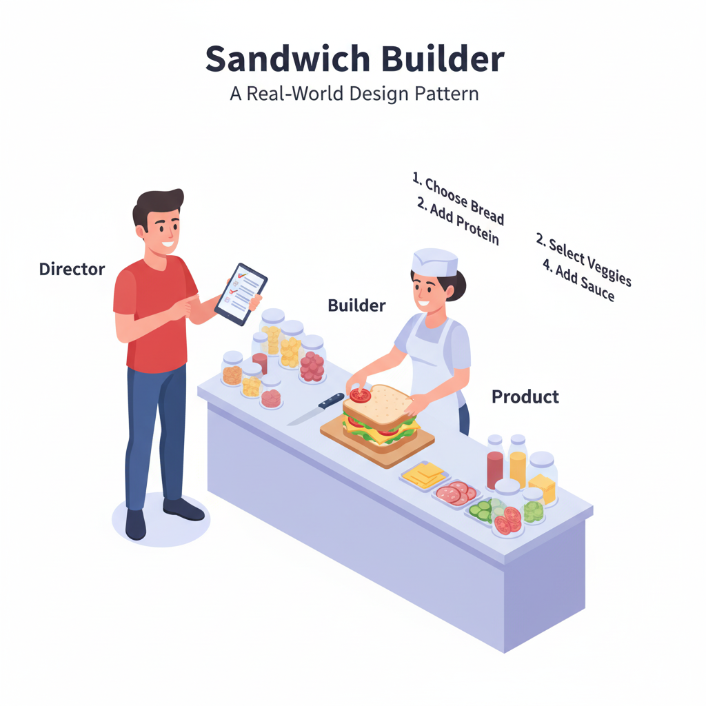
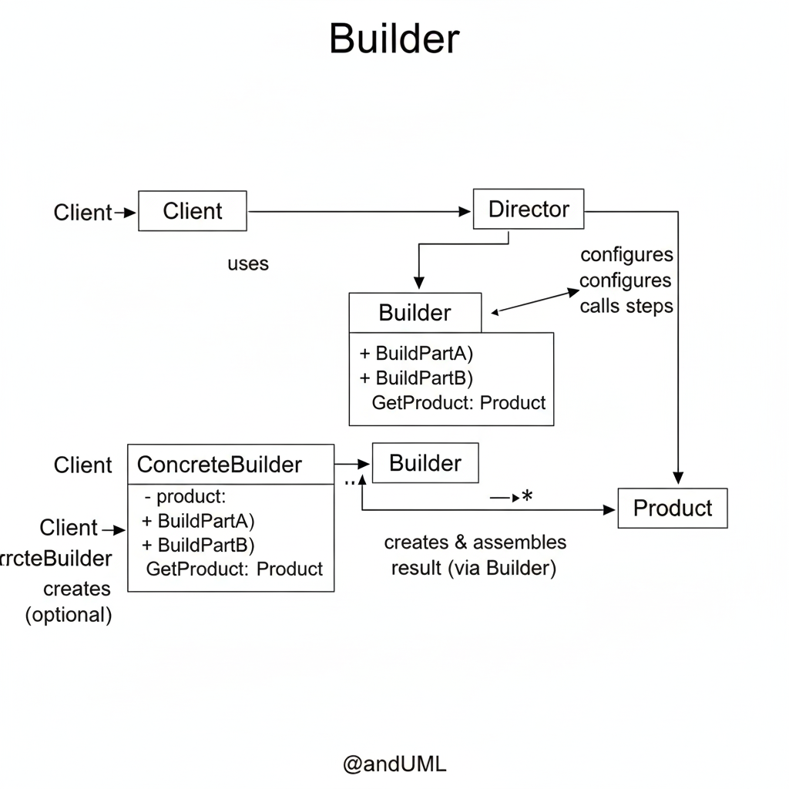

Introducción: El Patrón Anti-Constructores
¿Alguna vez has visto un constructor así?
var miReporte = new Reporte("Título", true, false, true, "Arial", 12, "Autor", null, "Contenido...");Este es el infame "Constructor Telescópico". Es frágil, ilegible (¿qué significa `false`?) y una pesadilla de mantener. ¿Y si quieres un reporte con `Autor` pero sin `Fuente`? Tienes que pasar `null`, o crear *otro* constructor sobrecargado.
El Patrón Builder ataca este problema de frente. Separa la construcción de un objeto complejo de su representación final. En lugar de un constructor que lo hace todo de golpe, usas un objeto "constructor" (el Builder) al que le das instrucciones paso a paso.
El Patrón Builder te permite construir objetos complejos paso a paso, usando los mismos pasos de construcción para crear diferentes representaciones del objeto.
Es la diferencia entre comprar un PC pre-ensamblado (un constructor) y elegir cada componente tú mismo (un builder).

Prompt: Ilustración conceptual que muestra el Patrón Builder, con un 'Director' dando instrucciones a un 'Builder' que ensambla un 'Producto' pieza por pieza.
1. El Ribosoma: El Constructor de la Vida
La biología está repleta de patrones de diseño, y el Builder es uno de los más fundamentales. Piensa en la creación de una proteína.
Una proteína es un objeto increíblemente complejo, compuesto por una secuencia específica de aminoácidos. No se crea de la nada.
- El Producto: La
Proteínafuncional. - El Plan (Director): El
ARN mensajero (ARNm). Contiene la secuencia exacta de instrucciones (codones). - El Constructor (Builder): El
Ribosoma. Es la máquina que lee las instrucciones. - Los Pasos (
BuildPart): El Ribosoma lee un codón (instrucción) y añade elAminoácidocorrespondiente a la cadena.
El Ribosoma (Builder) ensambla la Proteína (Producto) paso a paso, siguiendo las instrucciones del ARNm (Director). El mismo Ribosoma puede construir miles de proteínas diferentes, simplemente siguiendo diferentes planos de ARNm. Esto es exactamente lo que hace el patrón Builder.
2. El Pedido de tu Sándwich
La analogía más famosa del patrón Builder es pedir un sándwich en un lugar como Subway. Cuando llegas, no dices "quiero un BMT". En su lugar, inicias un proceso de construcción paso a paso.
Tú eres el Director y el empleado es el Builder.
- Tú: "Comencemos un sándwich de 15cm." (
new SandwichBuilder()) - Tú: "Pan de orégano y queso, por favor." (
builder.SetPan("Orégano")) - Tú: "De pavo." (
builder.SetProteina("Pavo")) - Tú: "Queso provolone, tostado." (
builder.SetQueso("Provolone").Tostar()) - Tú: "Con lechuga, tomate y cebolla." (
builder.AddVegetal("Lechuga").AddVegetal("Tomate")...) - Tú: "Y un poco de mayonesa." (
builder.SetSalsa("Mayonesa")) - Empleado: "Aquí tienes." (
return builder.GetSandwich())
El resultado es un objeto Sandwich complejo. Usando el mismo empleado (Builder) y los mismos pasos (SetPan, SetProteina), el siguiente cliente (Director) puede construir una representación totalmente diferente (un sándwich de albóndigas en pan blanco sin tostar).

Prompt: Ilustración de una barra de sándwiches, mostrando a un cliente (Director) dando instrucciones paso a paso a un empleado (Builder) que ensambla un sándwich (Producto).
3. Implementación en C# (Ensamblador de PCs)
Vamos a construir el ejemplo de ensamblar una Computadora. Una computadora es un producto complejo con muchas partes opcionales (CPU, RAM, GPU, etc.).
3.1 El Producto
El objeto complejo que queremos construir. Nota: sus propiedades son de solo lectura pública; solo el Builder puede asignarlas.
/// <summary>
/// El Producto: Un objeto complejo.
/// </summary>
public class Computadora
{
public string CPU { get; set; }
public int RAM { get; set; }
public string Almacenamiento { get; set; }
public string GPU { get; set; } // Tarjeta gráfica (opcional)
public void MostrarEspecificaciones()
{
Console.WriteLine("--- Especificaciones de la PC ---");
Console.WriteLine($"CPU: {CPU ?? "No especificada"}");
Console.WriteLine($"RAM: {RAM} GB");
Console.WriteLine($"Almacenamiento: {Almacenamiento ?? "No especificado"}");
Console.WriteLine($"GPU: {GPU ?? "Integrada (N/A)"}");
Console.WriteLine("---------------------------------");
}
}3.2 La Interfaz del Builder
Define todos los pasos de construcción posibles.
/// <summary>
/// La interfaz Builder.
/// Define los pasos para construir el producto.
/// </summary>
public interface IComputadoraBuilder
{
void SetCPU(string cpu);
void SetRAM(int ram);
void SetAlmacenamiento(string almacenamiento);
void SetGPU(string gpu);
Computadora GetComputadora();
}3.3 El Builder Concreto
Implementa los pasos de construcción y mantiene una instancia del producto que está construyendo. A menudo, devuelve this para permitir una "interfaz fluida" (chaining).
/// <summary>
/// El Builder Concreto.
/// Implementa los pasos y mantiene el producto en construcción.
/// </summary>
public class ComputadoraBuilder : IComputadoraBuilder
{
private Computadora _computadora = new Computadora();
public ComputadoraBuilder()
{
this.Reset();
}
public void Reset()
{
this._computadora = new Computadora();
}
// Usamos 'this' para una interfaz fluida (Fluent Interface)
public IComputadoraBuilder SetCPU(string cpu)
{
_computadora.CPU = cpu;
return this; // Permite encadenar: builder.SetCPU(...).SetRAM(...)
}
public IComputadoraBuilder SetRAM(int ram)
{
_computadora.RAM = ram;
return this;
}
public IComputadoraBuilder SetAlmacenamiento(string almacenamiento)
{
_computadora.Almacenamiento = almacenamiento;
return this;
}
public IComputadoraBuilder SetGPU(string gpu)
{
_computadora.GPU = gpu;
return this;
}
// El método final que devuelve el producto
public Computadora GetComputadora()
{
Computadora resultado = this._computadora;
this.Reset(); // Prepara al builder para el siguiente producto
return resultado;
}
// Hacemos que la interfaz explícita llame a la fluida
void IComputadoraBuilder.SetCPU(string cpu) => this.SetCPU(cpu);
void IComputadoraBuilder.SetRAM(int ram) => this.SetRAM(ram);
void IComputadoraBuilder.SetAlmacenamiento(string almacenamiento) => this.SetAlmacenamiento(almacenamiento);
void IComputadoraBuilder.SetGPU(string gpu) => this.SetGPU(gpu);
}3.4 El Director (Opcional pero recomendado)
El Director encapsula "recetas" comunes. Sabe *qué* pasos ejecutar y en *qué* orden para construir una representación popular.
/// <summary>
/// El Director: Define el orden de los pasos de construcción.
/// Es opcional pero útil para encapsular "recetas".
/// </summary>
public class DirectorEnsamblaje
{
public void ConstruirPCGamer(IComputadoraBuilder builder)
{
builder.SetCPU("Intel Core i9")
.SetRAM(32)
.SetAlmacenamiento("2TB NVMe SSD")
.SetGPU("NVIDIA RTX 4090");
}
public void ConstruirPCOficina(IComputadoraBuilder builder)
{
builder.SetCPU("Intel Core i5")
.SetRAM(16)
.SetAlmacenamiento("512GB SSD");
// No se establece GPU, por lo que usará la integrada
}
}3.5 El Cliente
El cliente decide qué construir. Puede usar un Director para una receta estándar o usar el Builder manualmente para una personalización completa.
public class Program
{
public static void Main(string[] args)
{
var director = new DirectorEnsamblaje();
var builder = new ComputadoraBuilder();
// 1. Usando el Director para una PC Gamer
Console.WriteLine("Construyendo PC Gamer...");
director.ConstruirPCGamer(builder);
Computadora pcGamer = builder.GetComputadora();
pcGamer.MostrarEspecificaciones();
// 2. Usando el Director para una PC de Oficina
Console.WriteLine("\nConstruyendo PC de Oficina...");
director.ConstruirPCOficina(builder);
Computadora pcOficina = builder.GetComputadora();
pcOficina.MostrarEspecificaciones();
// 3. Usando el Builder manualmente para una PC personalizada
Console.WriteLine("\nConstruyendo PC personalizada (Workstation)...");
builder.SetCPU("AMD Threadripper")
.SetRAM(128)
.SetAlmacenamiento("4TB RAID 0 SSD")
.SetGPU("NVIDIA Quadro A6000");
Computadora pcWorkstation = builder.GetComputadora();
pcWorkstation.MostrarEspecificaciones();
}
}Resultado en Consola:
Construyendo PC Gamer...
--- Especificaciones de la PC ---
CPU: Intel Core i9
RAM: 32 GB
Almacenamiento: 2TB NVMe SSD
GPU: NVIDIA RTX 4090
---------------------------------
Construyendo PC de Oficina...
--- Especificaciones de la PC ---
CPU: Intel Core i5
RAM: 16 GB
Almacenamiento: 512GB SSD
GPU: Integrada (N/A)
---------------------------------
Construyendo PC personalizada (Workstation)...
--- Especificaciones de la PC ---
CPU: AMD Threadripper
RAM: 128 GB
Almacenamiento: 4TB RAID 0 SSD
GPU: NVIDIA Quadro A6000
---------------------------------4. Builder vs. Otros Patrones
Builder se confunde a menudo con los patrones Factory, pero su propósito es muy diferente.
Builder vs. Abstract Factory
- Abstract Factory: Se enfoca en crear familias de objetos relacionados (ej.
IButtonyICheckboxde estilo Mac). El cliente obtiene productos distintos. - Builder: Se enfoca en construir un único objeto complejo paso a paso. El cliente obtiene un solo producto al final del proceso.
Builder vs. Factory Method
- Factory Method: Crea un objeto en un solo paso. El patrón delega la decisión de *qué* clase instanciar a las subclases.
- Builder: Crea un objeto en múltiples pasos. El patrón se enfoca en *cómo* se ensambla el objeto.
Builder vs. Constructores Telescópicos
- Constructor:
new Objeto(a, b, c, d, e). Ilegible, inflexible, y te obliga a pasar `null` para parámetros opcionales. - Builder:
builder.SetA(a).SetC(c).SetE(e).Build(). Legible, flexible, y solo estableces lo que necesitas.
5. Diagrama UML
El diagrama UML formal muestra las cuatro partes clave interactuando.
Oficialmente, el Patrón Builder:
Separa la construcción de un objeto complejo de su representación, de modo que el mismo proceso de construcción pueda crear diferentes representaciones.
Los Cuatro Actores del Patrón
- Product (
Computadora): El objeto complejo que se está construyendo. - Builder (
IComputadoraBuilder): La interfaz que especifica los pasos de construcción. - ConcreteBuilder (
ComputadoraBuilder): Implementa la interfaz Builder, rastrea el producto que está construyendo y proporciona un método para recuperarlo (GetComputadora). - Director (
DirectorEnsamblaje): (Opcional) La clase que conoce la secuencia de pasos para construir una "receta" popular. Trabaja con la interfazIComputadoraBuilder.

Prompt: Diagrama UML claro del Patrón Builder, mostrando los 4 componentes: Director, Builder (interfaz), ConcreteBuilder y Product.
⚠️ Cuándo NO Usar el Patrón Builder
El patrón Builder es una solución elegante, pero introduce varias clases e interfaces nuevas. Es un caso clásico de "no uses un cañón para matar una mosca".
Evítalo Si...
- El objeto es simple: Si tu clase solo tiene 2 o 3 parámetros en el constructor, todos obligatorios, un constructor normal es mucho más simple y legible.
- No hay diferentes representaciones: Si siempre construyes el objeto de la misma manera, un Factory Method o un Abstract Factory podrían ser más apropiados.
- Los parámetros son inmutables: Si el objeto es simple y sus valores no cambian, un constructor simple es preferible. (Aunque un Builder es excelente para crear objetos inmutables complejos).
El costo: Aumenta la verbosidad del código. Creas 3-4 clases/interfaces solo para evitar un constructor. Úsalo solo cuando la complejidad del constructor se vuelve inmanejable.
💪 Ejercicio Práctico: Constructor de Consultas SQL
Tu tarea es crear un QueryBuilder para construir consultas SQL simples. El patrón Builder es perfecto para esto.
Requisitos
- Producto: No necesitas una clase `Producto`. El método final
Build()puede devolver unstring. - Builder: Crea una interfaz
ISqlQueryBuilder.Select(string tabla)Where(string condicion)OrderBy(string columna)Build()(devuelve string)
- ConcreteBuilder: Crea
MySqlQueryBuilderque implemente la interfaz. - Cliente: Muestra cómo construir dos consultas diferentes:
SELECT * FROM Usuarios WHERE Edad > 18SELECT * FROM Productos WHERE Categoria = 'Electronica' ORDER BY Precio
Bonus
Haz que los métodos del builder sean fluidos (devuelvan this) y añade un método Limit(int cantidad).
Conclusión: Construcción Flexible y Legible
El Patrón Builder transforma un proceso de creación monolítico y confuso (el constructor telescópico) en una serie de pasos elegantes, legibles y flexibles.
Te da control total sobre la creación del objeto, permitiéndote construir solo las partes que necesitas (como la PC de oficina sin GPU) o usar "recetas" predefinidas (como la PC Gamer) a través de un Director.
Desde pedir un sándwich hasta ensamblar una computadora o incluso construir consultas SQL, el patrón Builder es la herramienta fundamental para cuando el "cómo" se construye un objeto es tan importante como el "qué" se construye.